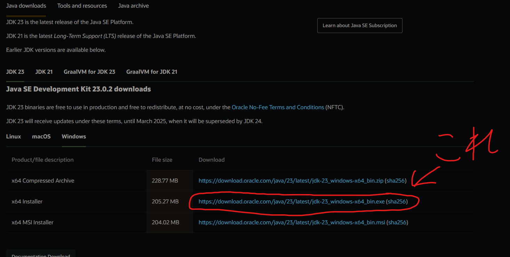

Minecraft MOD導入ガイド
2. Forgeをインストール
ダウンロードしたForgeのインストーラーを実行し、「Install Client」を選択してインストールします。 .jarファイルが使用できない場合、JDKをインストールする必要があります。
JDK 4. MODを導入
ダウンロードしたMODを .minecraft/mods フォルダにコピーします。

5. Minecraftを起動
Forgeを選択してMinecraftを起動し、MODが正しく動作するか確認します。